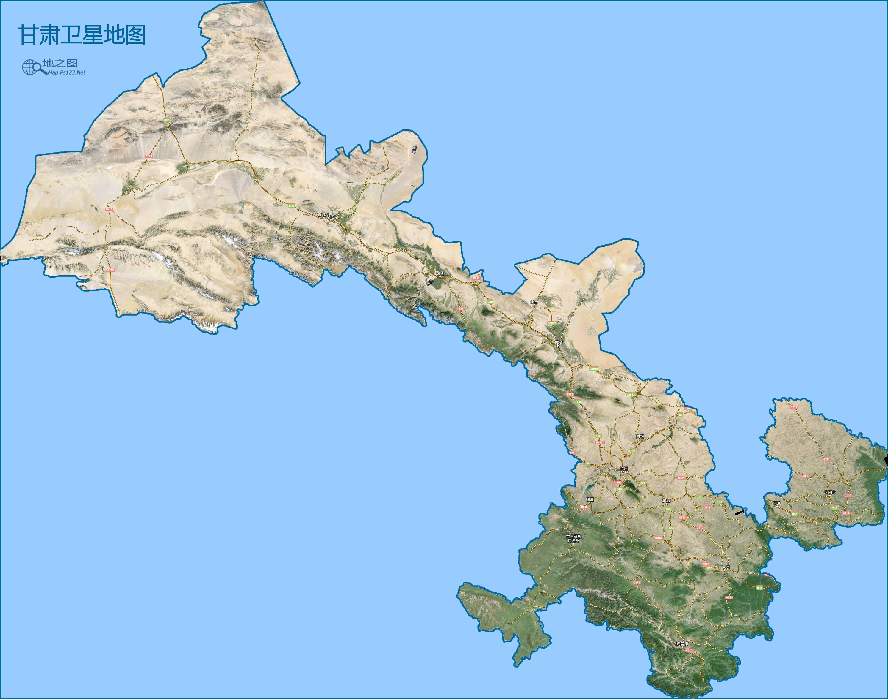

甘肃省简称甘或陇(省会兰州)，省会兰州。位于我国西北部，黄河上游，东经93°28'至108°44'，
北纬32°36'至42°48'，面积39万余平方千米，地形复杂、狭长。地形以山地和高原为主，仅北山
山地与祁连山地之间为狭长的河西走廊，是通往西域的交通咽喉，故成为丝绸之路的重要地段和军
事要地。本区属于温带大陆性干旱气候。年平均气温约9°C。1月平均气温-12—2°C，7月20—24°C。
受地形影响，各地年平均降水量相差极大，由东向西自500毫米降至不足50毫米。主要有汉、回、藏、
东乡、裕固、保安、蒙古、哈萨克、土、撒拉、满等民族。经济以农、牧、石油、化工等较重要，
盛产瓜果、中药及毛皮。甘肃，古属雍州，地处黄河上游，它东接陕西，南控巴蜀青海，西倚新疆，
北扼内蒙、宁夏，是古丝绸之路的锁匙之地和黄金路段。它象一块瑰丽的宝玉，镶嵌在中国中部的黄土高原、
青藏高原和内蒙古高原上，东西蜿蜒1600多公里，纵横45．37万平方公里，占全国总面积的4．72%。
甘肃地图
